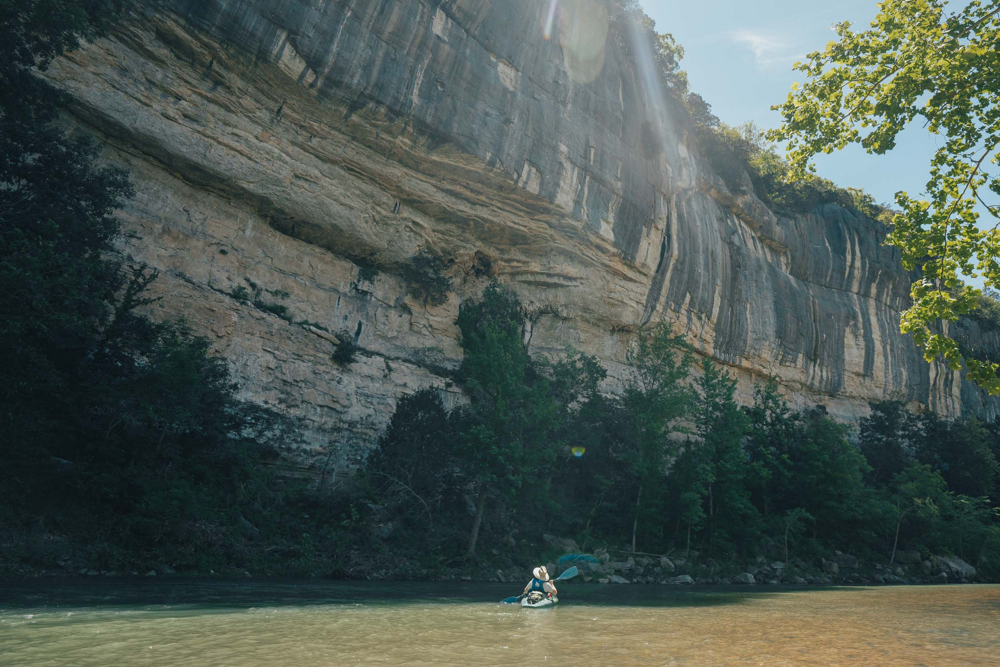

FAQ & Cancellation Policy
Find answers to common questions about floating the Buffalo River, cabin rentals, check-in times, cell service, and reservation policies.

Frequently Asked Questions
When is the best time to float the Buffalo River?
The water in the Buffalo National River depends on consistent rainfall throughout the year. Sometimes the river may be low or certain stretches may flow underground. Check our river gauge before planning your trip.
What should I know about a river trip?
Your river float experience depends on several factors, including the length of your visit, the season, the stretch of river, temperature, water level, river gradient, and your paddling ability.
What should I bring on my first float trip?
Wear weather-appropriate clothing. Sandals or old tennis shoes are better than flip flops because they are less likely to fall off. Bring dry bags, a cooler with water and snacks, river towels, and sunscreen.
What are cabin check-in and check-out times?
Cabin check-in is any time after 3:00 pm. Check-out is any time before 11:00 am.
How’s the cell service at the cabin?
Ponca does not receive strong cell service because of the steep terrain. However, cell service is often available at mountain-top cabins near Firetower Road, especially with major service providers.
What if I arrive at the cabin after hours?
If you arrive after closing, your cabin key and cabin map will be placed inside an envelope with your last name on it and attached to the bulletin board out front.
Cancellation Policy
Cabin Reservations
Cabin cancellations must be made in advance to avoid cancellation fees. Guests should contact Buffalo Adventure Co. as soon as possible if their plans change.
River Rentals
River trips may be affected by weather and water levels. If conditions are unsafe, rentals may need to be rescheduled or canceled.
Weather Policy
The Buffalo River changes depending on rainfall and river conditions. Guests are encouraged to check water levels before arriving.